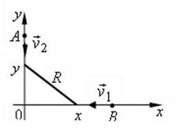

По двум взаимно перпендикулярным дорогам по направлению
к перекрестку движутся две автомашины со скоростями и
. Определите минимальное в процессе
движения расстояние между машинами, если в начальный момент времени расстояния
машин от перекрестка были равны и соответственно.
РЕШЕНИЕ:

Пусть первая и вторая машины в начальный момент
времени находятся в точках и . В процессе движения их координаты
изменяются со временем по законам , .
Квадрат расстояния между машинами определяется
функцией
,
ее производная
при
.
Вблизи этой точки производная меняет знак с –
на +, значит, в этот момент времени расстояние между машинами минимально и равно